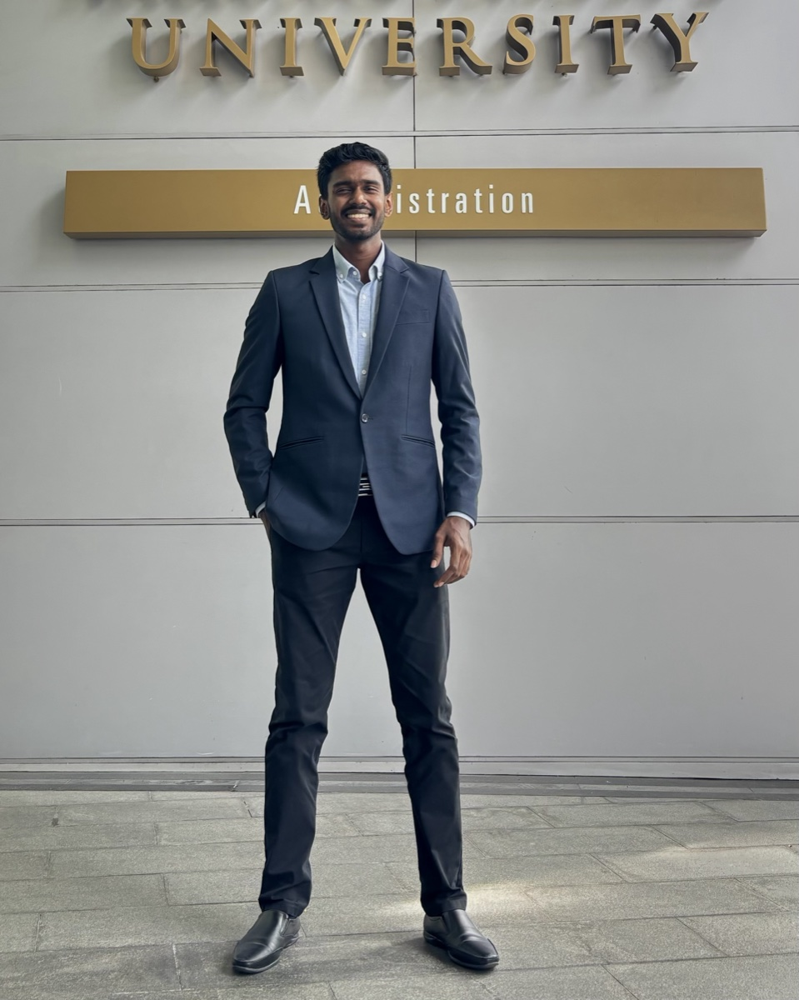

About

I am a final-year Electronic and Telecommunication Engineering undergraduate at the University of Moratuwa, Sri Lanka.
My research interests are efficient multimodal AI, 3D/4D perception, and learning-based robotic control. I am interested in reusing visual information to reduce unnecessary computation.
I hope to pursue a PhD and an academic research career.
Education & research connections
University of Moratuwa student · SMU research supported through SMART M3S · FYP collaboration with NUS